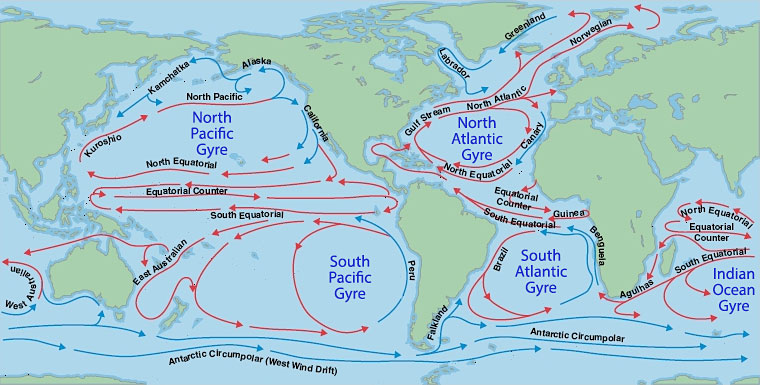
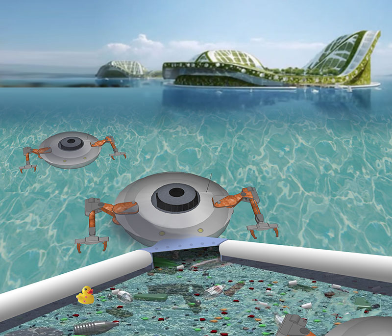
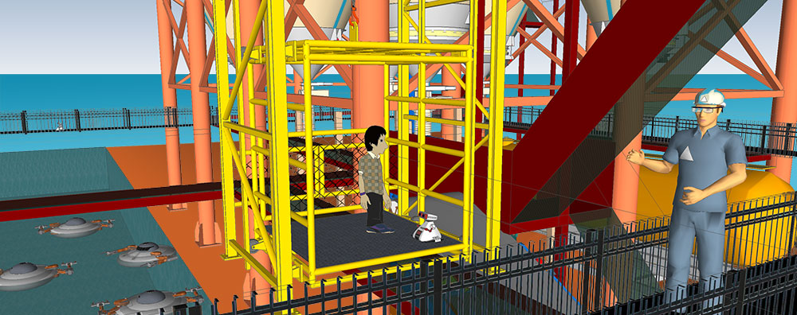
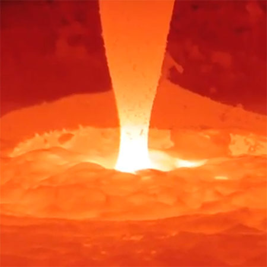
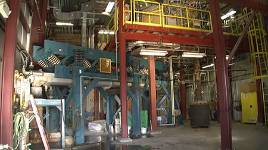

East of Savannah, slow moving ocean currents carry close to a million tons of floating plastic particles.
Our Solution
Harvesting the Vortex
By locating Recycling Islands in areas of the ocean where trash collects, our solution reduces transportation distances for processed materials. Through the production of syngas onsite, floating island recycling centers will produce enough clean energy to fuel the operation, while avoiding costly coastal land for industrial facilities.
Each of the world's five gyre, could eventually have an ocean-based waste processing facility where aquabots aid in the delivery of filtered waste to plasma arc melters for clean conversion into raw materials, including building supplies for residential and agricultural expansions to floating islands.

Swarmbots collect trash for delivery to Plasma Enhanced Melters
Team PlasmaTech
Ocean trash causes over a billion dollars in vessel damages per year. (Discovery.com) Port areas that harvest ocean plastics will see increased shipping and crusie ship usage thanks to reduced vessel damage.
Recycling Islands serviced by crowd-sourced swarmbots have the potential to engage kids around the world in remotely managing and monitoring clean-up projects through a game-based reward system. Players would start first with simulated bots, then work their way up to controlling real aquabots based on their game scores and ratings from other players.
1. Aquatic Clean-Up System
Savannah, Georgia is an ideal port city for the Recycling Island project. Surrounding the historic district, the shoreline is dotted with refineries, oil and gas terminals. Located downriver from the Savannah River Site and the new Plant Vogtle, aquabots could maintain river filtration systems for waste clean-up and the reclaimation of plastics. Positioned offshore in the cycling current of the North Atlantic Gyre, the Recycling Island facility could be a source of raw materials for local and international manufacturing and export, rather than shipping recycling business overseas.
Our solution involves trash collection by swarmbots for delivery to five floating islands equiped with Plasma Enhanced Melter (PEM®) technology. PEM's have been successfully deployed onshore by InEnTec in states like Oregon. Our model for an ocean-based PEM facility was created by Atlanta Neighborhood Charter School (ANCS) middle school student Ethan Heyns using SketchUp.
Our video interview with the director of Robotics at Georgia Tech which includes our 3D flythrough animation of aquabots and helper robots servicing a proposed Floating Island treatment facility. The game-based reward system for our aquabot teams was developed by ANCS middle school student Kol Greenbaum using Khan Academy's scripting tools.
2. Floating booms to shepard plastic into collectors
Teenage researcher Boyan Slat, has recommended using an array of giant manta-like boom arms skimming the sea surface. The arrays would anchor to the ocean floor 4 kilometers below. Our home page depicts a smaller boom system collecting trash along a river delta.
3. Separation of plankton from micro-plastics using centrifugal force
Aquabots could use internal centrifuge engines to separate microplastic from plankton. Boyan Slat has determined that "Plankton can survive over 50 G's, more than enough for separation."
4. Plasma Enhanced Melter - Generating revenue from processed materials
Boyan Slat reports there will be 7.25 million tons of extractable plastic by 2020, the equivalent to 1,000 Eiffel Towers. He also estimates that there will be $500 million in revenue from selling plastic harvested from the 5 gyres.
Our solution further increases the value of recovered plastics by processing and removing contaminants. Combining Boyan's boom collection solution with InEnTec's Plasma Enhanced Melter (PEM®) on floating islands would allow materials to be processed near the source to reduce total transit. Syngas (a fuel gas mixture consisting primarily of hydrogen, carbon monoxide and carbon dioxide) produced by the plasma arc gasification process would be used to power the facility. Purified water would be among the many products the Recycling Islands could sell around the world.
Visitor day for remote robot operators at the proposed Recycling Island Processing Facility - by Ethan Heyns.

5. Treatment and Disposal of Nuclear Waste
In addition to providing emergency response robots for cleaning up radioactive waste, Recycling Island plasma arcs could be used to dispose of a wide range of hazordous material. Plasma arcs, like the one at Georgia's Savannah River Site (SRS), turn radioactive waste into inert building materials. Learn More about Plasma Arc disposal of Radioactive Waste
Implementation Phases
Phase I: Alpha Island - Plasma Enhanced Melter (PEM®)
InEnTec's PEM facility received the first-ever Mixed Waste Permit issued by the U.S. Environmental Protection Agency for a combination of hazardous and nuclear waste.

Compared to traditional incineration of landfill trash, plasma gasification produces 60% less nitrogen oxides and 95% less sulfur oxides and mercury. (New York Times) Our goal is too dramatically exceed EPA emission standards. Trash processed from the oceans has the added advantage of containing far fewer sources of mercury since batteries and fluorescent lights don't float.
Phase X: Omega Island - Integral Fast Reactor (IFR)
Fourth Generation reactors will eventually replace Plasma Arcs as the prefered method to recycle waste without toxic gases as a byproduct. Gen4 reators won't produce radiative waste either and have no risk of meltdowns. Until then, spent fuel rods are being stockpiled around the world. Countries like Germany and Canada are preparing to send their nuclear waste to the Savannah River Site for storage. Hopefully Georgia's stockpiles will someday be safely fed into an Integral Fast Reactor.
"The Rao lab [at Clemson University] has created a carbon-based “bucky” sponge that separates oil from water, with a much higher capacity for soaking up an oil spill than other available products. The new sponges have a structure that resembles a parking deck, with closely knit nanotubes forming the deck and the microfibers supporting them as pillars. Bucky sponges, which have an extreme distaste for water, selectively take up oil. The sponges can be burned with no structural damage or loss of elasticity, Rao says, and can be reused over tens and hundreds of cycles." Learn more about Bucky sponges, carbon’s magic carpet